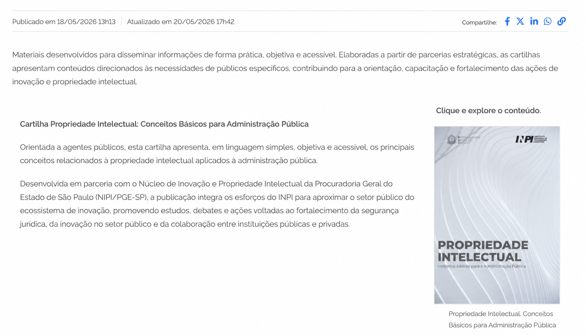

Todo critério segue a mesma frase-modelo e cita a orientação que o fundamenta.
O [objeto] deve [condição esperada] em [contexto], a fim de [objetivo], conforme [referência normativa].
01
ObjetoO que será avaliado?
Exemplo · Imagens informativas.
02
Condição esperadaO que deve acontecer?
Exemplo · Apresentar texto alternativo que descreva seu conteúdo.
03
ContextoOnde a regra se aplica?
Exemplo · No código HTML da página.
04
ObjetivoPara quê?
Exemplo · Permitir que pessoas que usam leitores de tela compreendam a informação.
05
Referência normativaQual orientação fundamenta a regra?
Exemplo · Cartilha de acessibilidade Gov.br e checklist eMAG.
Exemplo de critério preenchido
As imagens informativas devem apresentar texto alternativo que descreva seu conteúdo no código HTML da página, a fim de permitir que pessoas que utilizam leitores de tela compreendam a informação, conforme a cartilha de acessibilidade Gov.br e o checklist eMAG.
Como os critérios foram organizados
Seis temas
5FormaApresentação visual.
14ConteúdoTextos e informações.
8ArquiteturaEstrutura e navegação.
10InteraçãoLinks, botões e formulários.
11TecnologiaCódigo e acessibilidade.
7GestãoManutenção e acompanhamento.
Os mesmos critérios, classificados por aplicação
27 gerais
Valem para todas as páginas e conteúdos.
21 condicionais
Valem quando o recurso ou a situação existe.
7 de gestão
Correspondem ao tema Gestão.
Capítulo 03 · Coleta
Como mapeamos e preservamos o conteúdo
O acesso disponível ao Plone, sistema usado para publicar o conteúdo, não permitia consultar as bases internas nem as ferramentas técnicas de monitoramento. Por isso, examinamos o conteúdo público do portal.
Do mapa manual aos scripts de auditoria
Mapeamento manual
O levantamento começou à mão, com um mapa de páginas e caminhos no Figma.
Estudo de soluções
O grande volume de páginas e arquivos levou ao estudo de soluções para automatizar o levantamento.
Crawler
Um crawler, programa que visita páginas, passou a registrar os links encontrados no portal.
Scripts de download
Scripts baixaram cópias de HTML e PDF e organizaram os arquivos em pastas identificadas por IDs, ligados aos registros da planilha.
Scripts de auditoria
Outros scripts examinaram os arquivos coletados para a auditoria, apresentada no próximo capítulo.
Os programas foram desenvolvidos em Python, com apoio de modelos de inteligência artificial (LLMs) na programação, nos testes e na revisão do código.
Dois endereços podem levar ao mesmo arquivo.
O Plone também usa endereços técnicos, como @@download/file. Por isso, contamos endereços e arquivos separadamente e só marcamos duplicidade após conferir o destino.
Os programas examinaram páginas, links, imagens, formulários e documentos PDF, verificando o que pode impedir quem usa leitor de tela ou teclado de navegar e entender o conteúdo.
Como os critérios orientaram a auditoria
FonteA orientação usada como referência.
CritérioA regra de verificação.
Página ou arquivoO material examinado.
EvidênciaO elemento ou registro encontrado.
Possível consequênciaO que pode dificultar o acesso ou o uso.
RecomendaçãoO que deve ser corrigido.
O que foi examinado
Links e destinos
Nomes, endereços e respostas.
Imagens
Textos alternativos declarados no conteúdo.
Arquivos PDF
Informações e propriedades dos documentos.
Metadados
Dados declarados nas páginas e nos arquivos.
HTML
Elementos, atributos e organização do código.
Navegação
Caminhos e elementos de interação publicados.
Três exemplos de problema e impacto
01
Imagem sem descrição adequada
Evidência
Texto alternativo ausente ou que não explica o conteúdo.
Possível impacto
Pessoas que usam leitor de tela podem perder a informação transmitida pela imagem.
02
Link ou campo sem nome claro
Evidência
Rótulo ausente, genérico ou insuficiente para identificar a ação.
Possível impacto
Pode ficar difícil reconhecer o que o elemento faz ou para onde leva.
03
PDF sem idioma declarado
Evidência
O idioma não está informado nas propriedades do documento.
Possível impacto
A leitura da língua por tecnologias assistivas pode ser prejudicada.
Da interface à evidência técnica
Leitor de tela em uso. Com rótulos inadequados, a navegação fica ambígua.
Com o inventário, preparamos cartões com os assuntos do portal para uma pesquisa de Card Sorting.
Nessa técnica, as pessoas agrupam os cartões da forma que faz sentido para elas, o que mostra como os conteúdos podem ser organizados e nomeados. Antes de montar os cartões no UserBit, revisamos no inventário os nomes e as sobreposições entre os assuntos.
Descrição, formato e tamanho dos documentos podem ficar dispersos, o que dificulta reconhecer e comparar arquivos antes do clique.
01
As fontes
HTML como formato preferencial
“Os documentos devem ser disponibilizados preferencialmente em HTML. […] Se um arquivo for disponibilizado em PDF, deverá ser fornecida uma alternativa em HTML ou ODF.”
eMAG 3.1, recomendação 3.8
HTML e ODF sempre entre as opções
“Um dos formatos mais acessíveis é o próprio HTML; por isso, disponibilize documentos nesse formato. Outra estratégia é oferecer várias opções de formatos, incluindo sempre o HTML e o ODF.”
Cartilha Gov.br de conteúdo acessível, 2023
Formato e tamanho no texto do link
“É necessário, também, informar o formato e o tamanho do arquivo no próprio texto do link, por exemplo: Manual do W3C (formato .odt, tamanho 150 Kb).”
Cartilha Gov.br de conteúdo acessível, 2023
Extensão junto ao nome do arquivo
“Junto com o nome deve ser agregada a extensão do arquivo que está sendo disponibilizado para download, para que o usuário saiba que tipo de documento está disponível para baixar.”
Checklist eMAG de acessibilidade para deficientes visuais · orientação equivalente no checklist eMAG para desenvolvedores, seção 2.2
02
O critério
Critério escrito a partir das fontes
Os links para documentos devem informar o formato e o tamanho do arquivo no próprio texto do link, com o conteúdo oferecido preferencialmente em HTML, nas páginas que disponibilizam arquivos para download, a fim de que as pessoas, inclusive as que usam leitores de tela, saibam que tipo de documento vão abrir ou baixar, conforme o eMAG 3.1, a Cartilha Gov.br de conteúdo acessível e os checklists eMAG.
Indexação e monitoramento
Indexação nos buscadores
Título, resumo, formato e assuntos escritos em HTML ficam legíveis para buscadores e leitores de tela, sem abrir o arquivo. O Google indexa páginas HTML e também PDF.
Monitoramento de downloads
Na medição otimizada do Google Analytics 4, cliques em links para arquivos, como .pdf, geram o evento file_download, com nome, extensão e texto do link. Abrir e baixar, separados no componente, podem ter eventos próprios.
Fontes: Google Search Central, tipos de arquivo indexáveis; Ajuda do Google Analytics, medição otimizada.
03
Demonstração
Solução atual
Apresentação atual da cartilha no site

Proposta
Componente de pré-download
PDF15,6 MB
Propriedade Intelectual: Conceitos Básicos para Administração Pública
Voltada a agentes públicos, a cartilha apresenta os principais conceitos de propriedade intelectual aplicados à administração pública. O material aborda fundamentos para identificar, proteger e gerir ativos de propriedade intelectual no setor público.
Cartilha
Propriedade Intelectual
Administração Pública
Responsáveis
INPI e Núcleo de Inovação e Propriedade Intelectual da PGE-SP
Idioma
Português
Formato
PDF
Disponibilidade
Arquivo oficial disponível para consulta no portal do INPI.